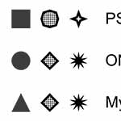
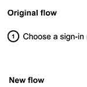
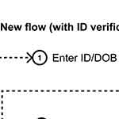
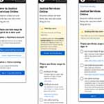
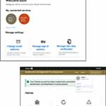

Loading metadata...
I worked as a Product Designer with the Ontario Digital Service to help lay the groundwork for a new single sign-on (SSO) for the province's digital services. We worked alongside 13 different program areas and the Public Secure team before handing our work off.
As put by an end-user we spoke with, the current one key single sign-in portal acts as a 'fake front door', in that most of the program areas using ONe-key require further verification upon the completion of signing in. Some of the larger issues we tackled were:
We observed that ONe-key and Public Secure Pilot confuse our public users while not meeting the expectations of our internal stakeholders, which causes a lower adaption of Ontario's single sign-on solution from digital services, in addition to higher call centre volumes from users. Our goal was to improve Ontario's single sign-on solution so that more program areas and end-users would adopt Public Secure, and so that call centre volumes would subsequently be reduced.
There are three unique levels of authentication: low (username and password), medium (username, password and an additional piece of ID), and high (username, password, two-factor authentication). Depending on the program area being accessed, different pieces of information were required within and throughout these three levels of authentication to sign-up or sign-in, making the concept of a single sign-on tricky (Fig. 1).
| * | Title | Size (bytes) | View |
|---|---|---|---|
|  | Fig. 1 – Authentication levels | Loading... | Load image |
As this was an engagement occurring in the midst of the COVID-19 pandemic, recruiting users to interview proved to be a challenge. After the synthesis of our 12 user interviews, we grouped common traits and came up with three user personas (Fig. 2). As this is a single sign-on that has the potential to be used by effectively any member of the Ontario public, we chose not to create personas within a specific niche, instead opting for a more all-encompassing set of personas to help steer our work.
| * | Title | Size (bytes) | View |
|---|---|---|---|
| Fig. 2 – User personas | Loading... | Load image |
After synthesizing stakeholder and user interviews notes we drafted up flows we found were particularly common and/or problematic:
We ultimately drafted numerous flows that encompassed everything from informing Public Secure users of the portal changes to incorrect sign-on attempts, but those five flows remained the most important throughout our testing sessions.
Shortly after we began user testing with our preliminary onboarding flows, we discovered that many users confused the different sign-in options as different types of accounts altogether. Since emails were mandatory regardless of the chosen sign-in method, we decided to use the email to initiate the account creation proccess. On top of simplifying the flows, this changed the way many users perceived the sign-in options: now instead of seeing them as different account types, they more appropriately recognized as different means of signing in to the same account (Fig. 3).
During our testing sessions many users confused unique ID's (ie. MyBenefits' MemberID) with something needed to create/sign-in to an Ontario account, while some outright forgot that it was even a part of the registration process to begin with by the time the screen for it arrived. We changed it so that the user is prompted to input their unique ID before creating an account (Fig. 4).
| * | Title | Size (bytes) | View |
|---|---|---|---|
|  | Fig. 3 – Sign-up made simpler | Loading... | Load image |
|  | Fig. 4 – Managing additional IDs | Loading... | Load image |
As we ran through 11 user testing sessions we ended up with five iterations of our prototypes. In the ensuing section I'll detail a few more interface related changes we made to our screens.
ONe-key alerts (Fig. 5): On our initial mockups we had a yellow banner, warning ONe-key users that their account needed to be transferred. Many non-ONe-key users we tested with were unable to determine whether this warning was relevant to them or not. We changed the warning box to be less verbose in future iterations, reducing the potential for confusion from those unfarmiliar with ONe-key, and increasing the likeliness of a user actually reading it, in case it was pertinent to them.
Improved buttons (Fig. 6): Another significant change made was the buttons on the landing page. Based on stakeholder feedback and then the subsequent first user tests, we were able to confirm that having primary and secondary buttons inherently created a hierarchy within the options, which are all of equal importance. We changed these buttons to radio buttons and soon after noticed that this users were more inclined to thoroughly read through all their options.
Account management (Fig. 7): With a single sign on for government services, users need the ability to manage profiles within a program area, as well as their overall account. For signed in users we needed a dropdown menu for the user to manage account settings/sign out as well, and for navigating different profiles within a service we needed a second dropdown menu.
| * | Title | Size (bytes) | View |
|---|---|---|---|
| Fig. 5 – ONe-key alerts | Loading... | Load image | |
|  | Fig. 6 – Improved buttons | Loading... | Load image |
|  | Fig. 7 – Account management | Loading... | Load image |
All things said and done, we mocked up 8 scenarios, with over 15 flows and more than 120 total screens between them all. The five flows below are those that are relevant to the aforementioned five problematic flows, and were the ones we continued to test the most.